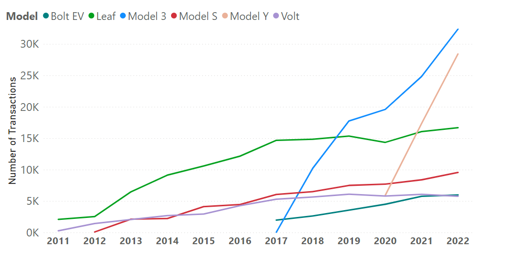
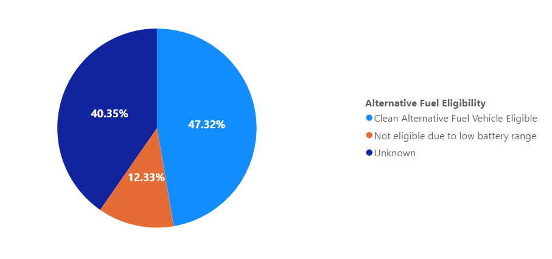

DATA SOURCE AND PREPARATION:
This project is dependent on data obtained from data.gov, with the most recent update being as of September 15, 2023. It's crucial to acknowledge that these datasets may undergo future updates. However, They furnish us with an extensive datasets containing multiple vital variables crucial for attaining our research objectives.
Key variables within the datasets include the transaction identification number, transaction type, location information pinpointing the primary vehicle owner's whereabouts, and comprehensive details describing the attributes of the registered electric vehicles.
During the data preparation phase, our primary focus shifted towards exploring the structures of the datasets and understanding how they are interconnected. This phase played a pivotal role in laying the groundwork for a thorough analysis and making it easier to query complex data. Additionally, it holds great importance in addressing the relevant research questions. Through careful organization of the data, we improve our capacity to discover valuable insights, detect patterns, and create engaging visual representations that effectively convey the narrative of electric vehicle registrations within our datasets.
The source code for SQL Server, encompassing all stages of the project's data analysis, is available on my GitHub in two formats: complete SQL files and a SQL notebook for enhanced representation.
In-Depth Analysis:
-
Mapping electric vehicle transactions throughout the united states
Our dataset comprises more than 800,000 transactions of diverse types. The count of transactions plays a pivotal role in shaping our upcoming insights. Our map visualization vividly illustrates the counties of residence for vehicle owners who conducted these transactions. Each green dot on the map represents a county, with the size of the dot corresponding to the number of transactions. King emerges as the most prominent county in terms of transaction numbers, followed by Snohomish and Pierce.
It's noteworthy that, in the United States, drivers are generally required to register their vehicles in their state of residence. This explains why 99.6% of the transactions took place within Washington state. However, there are exceptions, such as active-duty military personnel on assignment in other states and college students attending school in different states, resulting in transactions reported from 48 states and Puerto Rico (U.S. territory).
-
The top brands presence in the number of electric vehicles

As previously mentioned, the Washington State Department of Licensing documented more than 800,000 transactions involving electric cars, even though the total count of electric vehicles did not exceed 184,000 units. Within this specific segment of electric cars, we identified a total of 40 different brands. To maintain clarity, we have opted to highlight the top 8 brands. At the forefront stands Tesla, boasting approximately 80,000 electric cars, which accounts for 43.49% of the entire electric car market. Following byNissan and Chevrolet. What's truly captivating is the diverse spectrum of brands within the electric car market, representing countries such as the United States, Germany, Japan, and South Korea.
-
The prevalence of electric car models in terms of transaction volume
After consulting leading car brands, it's intriguing to analyze which electric car models have garnered the most transactions. For a clearer visual representation, we've selected the top 6 models, among which we find the top 3 car brands featured in the previous visualization: Tesla (comprising Model 3, Model Y, and Model S), Chevrolet (Bolt EV and Volt), and Nissan (Leaf)
The Leaf model shows a significant increase in transaction volume, while the Volt model maintains a consistent presence over the years. Notably, Chevrolet released the Bolt EV in nationwide and international markets in 2017. This model quickly gained recognition within the Washington State Department of Licensing. By 2022, both Chevrolet models appear to have achieved similar number of transactions.
Tesla, on the other hand, made its initial mark with the Model S and significantly expanded its presence since 2017, primarily due to the Model 3's remarkable surge in transaction volume. What's particularly remarkable is the successful launch of the Model Y. Since its introduction, it outperformed the Chevrolet models in 2020 and demonstrated a consistent upward trend through 2022.
For the year-based visuals, we have intentionally excluded data from the year 2023 to facilitate more accurate Year-over-Year (YOY) analysis.
-
Analyzing the Distribution of PHEV and BEV Transactions
Between 2010 and 2012, both the PHEV and BEV vehicles recorded approximately equal transaction numbers. However, from that point onward, BEV vehicles have consistently seen a notable increase in transactions, particularly since 2017, offering valuable insights into the electric car market's evolution.
Battery Electric Vehicles (BEVs) solely rely on electric power through electric motors, Where the Plug-in Hybrid Electric Vehicles (PHEVs) combine an internal combustion engine with an electric motor and rechargeable battery.
-
Exploring Vehicle Eligibility for Alternative Fuel Status
Analyzing Clean Alternative Fuel Vehicle (CAFV) Eligibility can be used to inform policy making and sales strategies. In summary, vehicles with an electric range exceeding 30 miles qualify for the Clean Alternative Fuel Vehicle Eligibility category, while those with less than 30 miles are designated as Not Eligible due to limited battery range. Vehicles with unreported electric range data are categorized as Unknown. Conducting a comprehensive analysis of electric range within other categories may reveal valuable insights
Comparing Electric Car Distribution by Range for BEV and PHEV
The categories of BEV and PHEV appear to be the most suitable classifications for examining the distribution of electric cars based on their electric range. It is noteworthy that, during the in-depth analysis phase, we identified a significant proportion of unreported electric range data, accounting for approximately 40% of the total dataset. Nonetheless, this still leaves us with over 109,000 reported electric ranges, which remains a substantial sample size to draw meaningful conclusions from. This clustered column chart will help us understand better the following violin plots.
The violin plots serve as invaluable tools, effectively depicting the characteristics of electric range distributions and providing valuable insights. Wider sections of the violins signify areas where electric vehicles are densely clustered, while narrower sections indicate regions with fewer electric vehicles.
It's evident from the plots that PHEV exhibits a wide section in the 0 to 50 electric range miles, while BEV has a comparatively thin section. This observation aligns with what we previously observed in the clustered column chart, where PHEV had over 37,000 electric vehicles and BEV had nearly 24 electric vehicles. The prior visual aids in a more nuanced understanding of Electric Car Distribution by Range.
Furthermore, the data points for electric range tend to be more tightly concentrated around the mean (Black dot) for PHEV compared to BEV. This phenomenon can be quantified in statistical terms by examining the standard deviation, which measures the extent to which data points deviate from the mean. The lower standard deviation in PHEV electric range (17.38) when compared to BEV (76.88) substantiates our initial observations, enriching our comprehension of the data distribution.